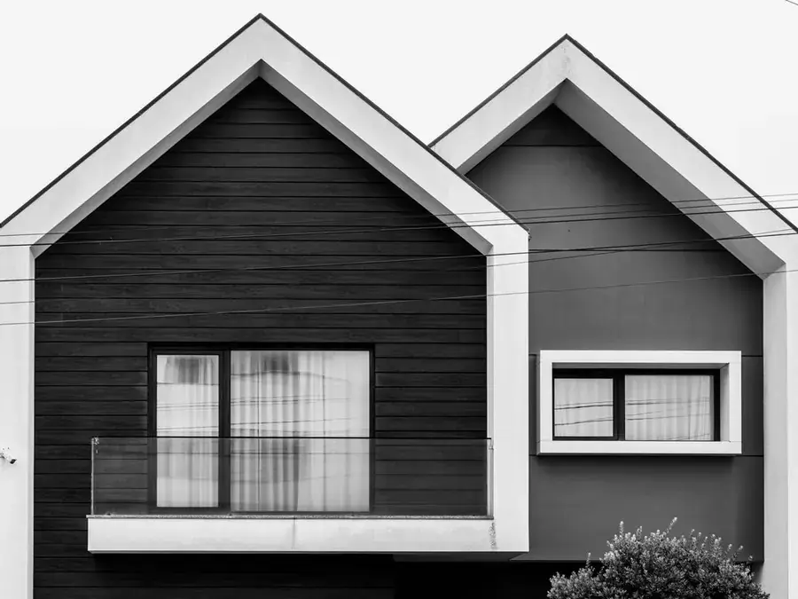
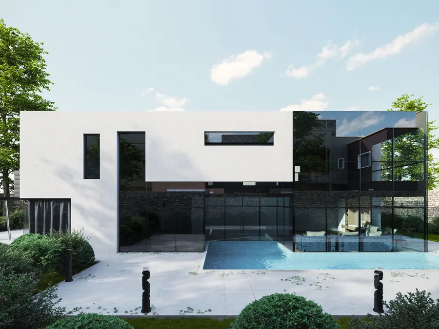
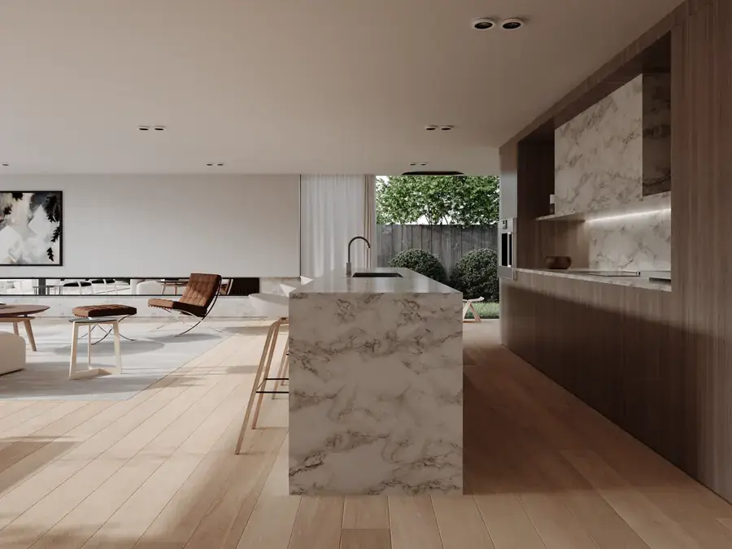
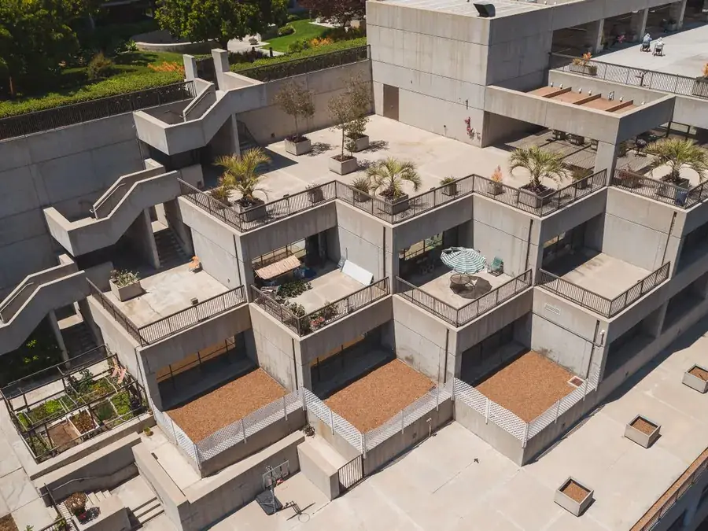
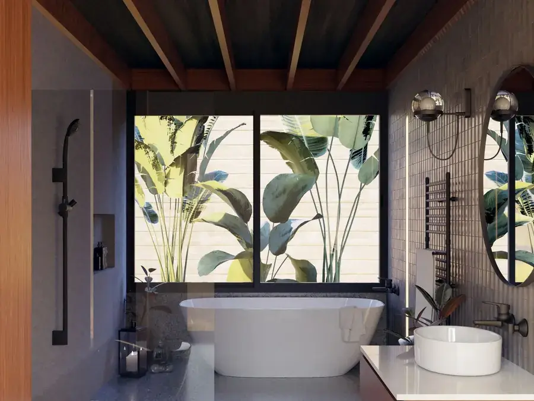
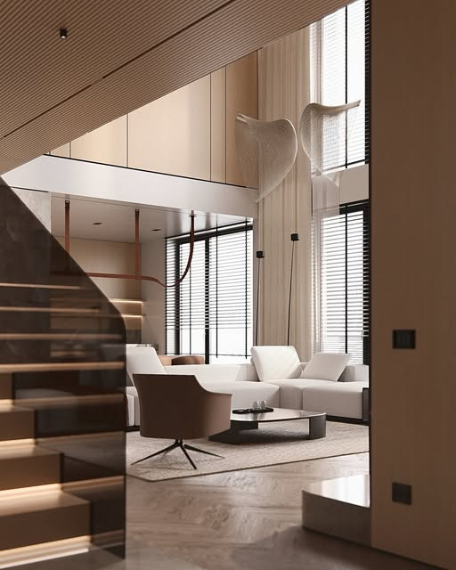
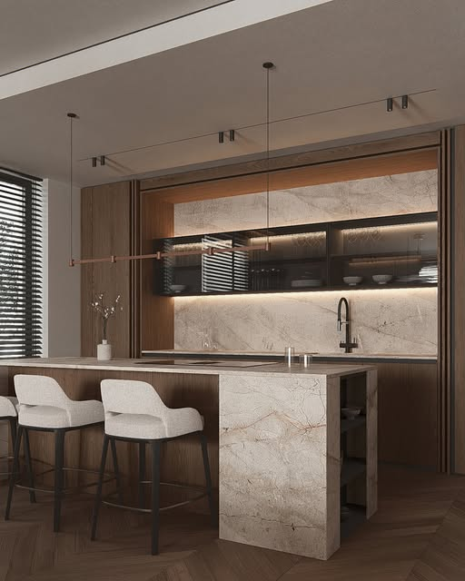
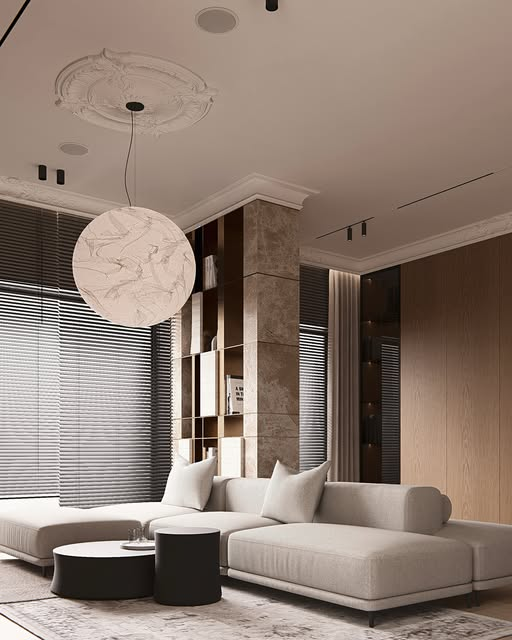
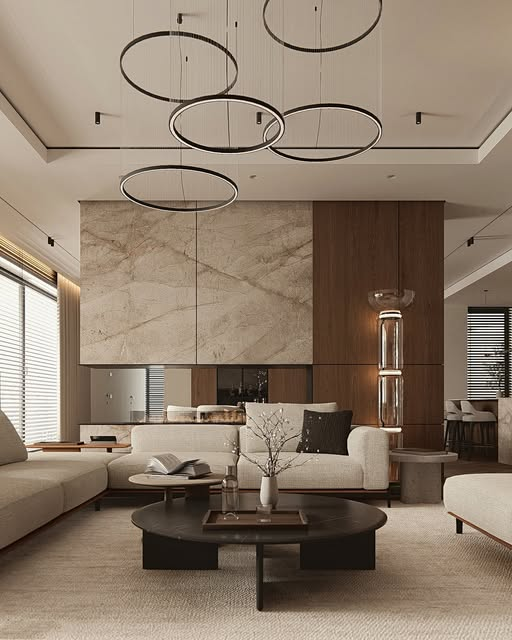
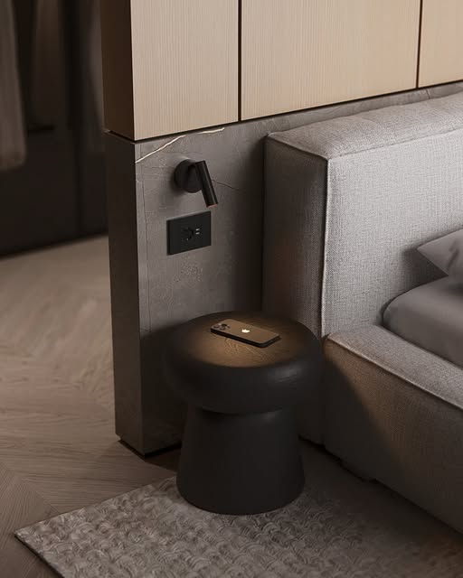

Vezi casa înainte de prima cărămidă.
Proiectăm case, renovări și interioare în București și ne ocupăm de avize și autorizație. Fiecare proiect îl vezi întâi în 3D: rotești casa, o privești din orice unghi și schimbi ce nu-ți place cât încă e doar un desen.





- Proiect
- Vilă cu living pe dublă înălțime
- Tip
- Casă nouă
- Scara
- Fără scară
- Stadiu
- Studiu de volum
Tot drumul, de la teren la cheie.
Un singur birou pentru proiect, acte și șantier. Nu mai alergi între arhitect, inginer și primărie.
| Cod | Serviciu | Ce include |
|---|---|---|
| ARH | Proiectare de arhitectură | Case construite de la zero, gândite pentru terenul, bugetul și felul în care trăiești, plus inginerie și coordonarea specialităților. |
| 3D | Randări și modele 3D | Casa în 3D înainte de autorizație, ca să decizi pe imagine, nu pe planuri greu de citit. |
| AUT | Avize și autorizație | Certificat de urbanism, avize, verificarea codurilor de construcție, documentația pentru autorizație și urbanism (PUZ, PUD). |
| REN | Renovare și clădiri vechi | Renovări de locuințe, reabilitarea clădirilor istorice și schimbarea funcțiunii pentru clădiri care merită păstrate. |
| INT | Design interior | Compartimentare, finisaje, mobilier și lumină, cu aceeași grijă ca pentru fațadă. |
| MAN | Consultanță și management | Consultanță înainte să cumperi terenul și coordonarea lucrării până la recepție. |
Detalii care se văd din prima.
Aici vor sta proiectele Est Rise. Până atunci, imaginile de mai jos sunt demonstrative și arată cum va arăta secțiunea.





Fiecare etapă are o revizie.
Știi mereu unde e proiectul și ce urmează. Nimic nu trece mai departe până nu-l aprobi.
- A
Discuție și vizită pe teren
Ne spui ce vrei și cât vrei să cheltui. Vedem terenul sau clădirea și îți spunem sincer ce se poate face.
- B
Concept și model 3D
Primești casa în 3D. O rotești, o comentezi, o schimbăm până arată cum ți-ai imaginat-o.
- C
Avize și autorizație
Pregătim documentația, obținem avizele și depunem dosarul pentru autorizația de construire.
- D
Proiect tehnic
Planuri și detalii după care constructorul poate lucra fără să ghicească.
- E
Pe șantier
Venim pe șantier și urmărim ca ce se construiește să fie ce s-a desenat.
Hai să ne uităm pe teren.
Spune-ne ce ai în minte: o casă nouă, o renovare sau doar o întrebare despre autorizație. Prima discuție e fără obligații.
- Telefon
- 0731 835 383
- Program
- Până la ora 17:00